ポッパ山
MountPopa
バガンの南東50キロのところにあるポッパ山、その中腹に突然デベソのようにボコっと出っ張ったところがある。これがタウンカラッTaungKalatとよばれる聖地である。
ここはミャンマーの土着信仰のナッ神の聖地でもあるため、ナッ神のキャラも満載。
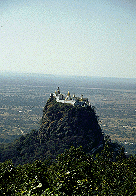
これがタウンカラッ。頂上にパゴダを建てたくなる気持ちがよ〜くわかる。
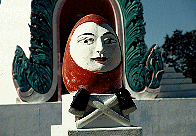 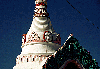
達磨君である。
他ではあまり見られないキャラ。
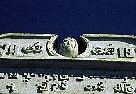
こんなのもいます。
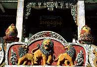
両端のドンガバチョも捨て難い。
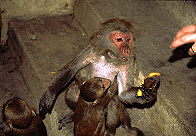
タウンカラッの入り口にはたくさんの猿がいる。
土産物屋のおばちゃん達が餌付けをしており態度がでかい。
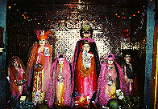
麓のお堂にはナッ神がまつられている。
決して歌謡ショーではない。
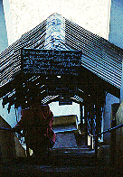
こんな感じの階段を延々と登って行く。結構キツイ。
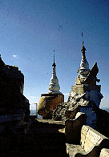
で、頂上。
ここにもチャイティーヨのミニチュアが。
そんなことしなくても充分聖地なんだからいいじゃんか。
 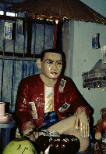
ミャンマー国内限定超有名人、ボーミンガウン氏。
超能力をもった高僧だそうです。
木彫りの像なのに賽銭のお札を入れるポケットがちゃあんと作られているところがニクイ。
あちこちのパゴダで見かけたがここのが一番扱いがいい。
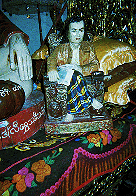
あ、我が心の父師、キングオブソウル、ジェイムス☆ブラウンだ。
そ〜か〜、存命中に神になったかあ、さすがJB。
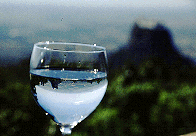
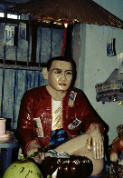
ミャンマー国内限定超有名人、ボーミンガウン氏。
超能力をもった高僧だそうです。
木彫りの像なのに賽銭のお札を入れるポケットがちゃあんと作られているところがニクイ。
あちこちのパゴダで見かけたがここのが一番扱いがいい。
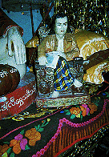
あ、我が心の父師、キングオブソウル、ジェイムス☆ブラウンだ。
そ〜か〜、存命中に神になったかあ、さすがJB。
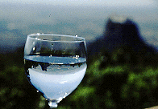
いよいよフィナーレへ！
ミャンマーパゴダ列伝のページへ
珍寺大道場HOME